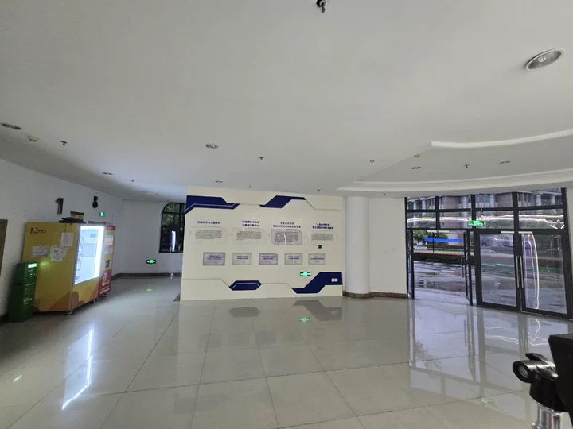
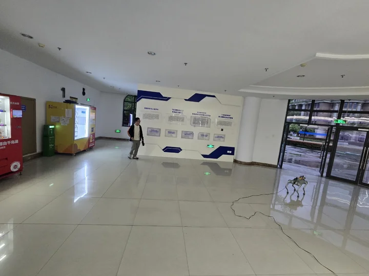
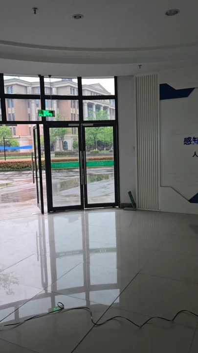
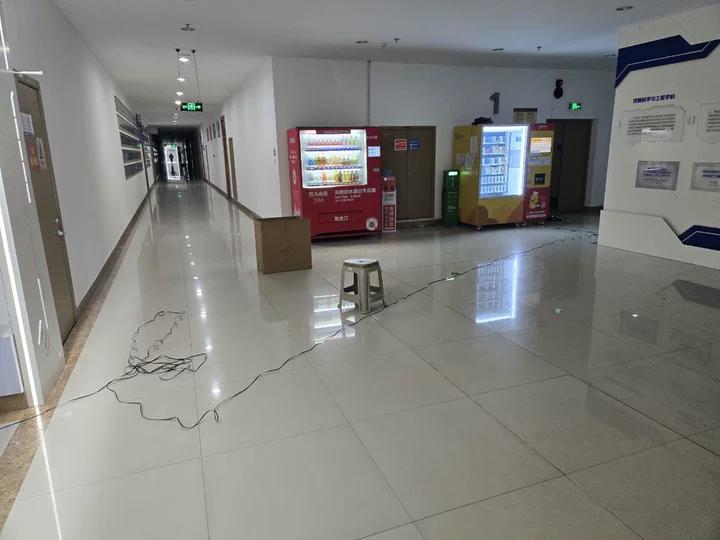
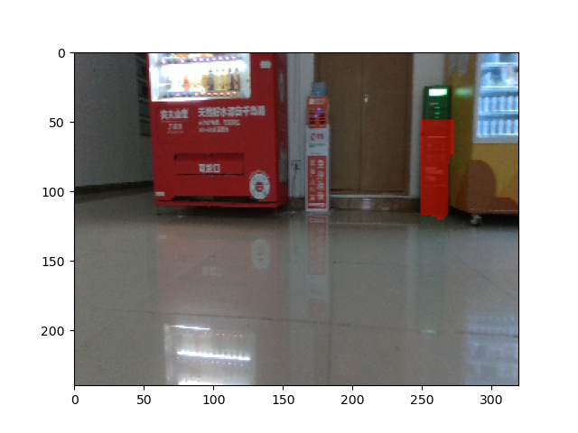
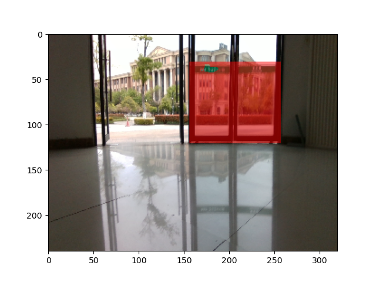

IntentReact: Guiding Reactive Object-Centric Navigation via Topological Intent
Overview
- We propose an intent-conditioned object-centric navigation framework that introduces a global topological intent into a reactive controller, enabling an effective bridge between global planning and local decision-making under partial observability.
- We introduce a compact next-hop intent representation that captures minimal global guidance to resolve local ambiguity while maintaining consistency with topological progress.
- We present a feasibility-aware waypoint refinement module that enforces geometric consistency via BEV-based traversability, forming a unified loop between learned control and explicit feasibility reasoning.
IntentReact Pipeline

- 1) Offline Mapping: We construct an object-level topological map with 3D node information.
- 2) Online association: During online execution, the current observation is matched to the map to obtain a set of query nodes.
- 3) Global topological planning: For each query node, global planning is performed to obtain a shortest path, from which an object-level costmap is built and an intent vector indicating the direction of decreasing topological distance is computed and fed into the local control stage.
- 4) Intent-conditioned local control: The local controller predicts waypoints from an object-centric costmap, with intent acting as a conditional signal to modulate feature representations and provide global guidance.
- 5) Waypoint refinement: A BEV costmap is further used to correct the feasibility of the predicted waypoint, forming a unified closed loop between learned control and geometric feasibility.
More Comparison Results


ObjectReact initially turns toward the correct direction, but lacks consistent guidance near the goal and ultimately drifts away. IntentReact successfully reaches the goal without drifting.


IntentReact matches ObjectReact when no ambiguity exists, indicating that intent acts as a soft bias that intervenes only under directional ambiguity without disrupting the underlying reactive control.
Real-world Deployment




Hall_environment
Third-person perspective
Mapping run

goal
Shortcut
goal
New obstacles
goal
Opposite

goal
Reverse
AutoMat
To Charge Bank
To Sign Broad